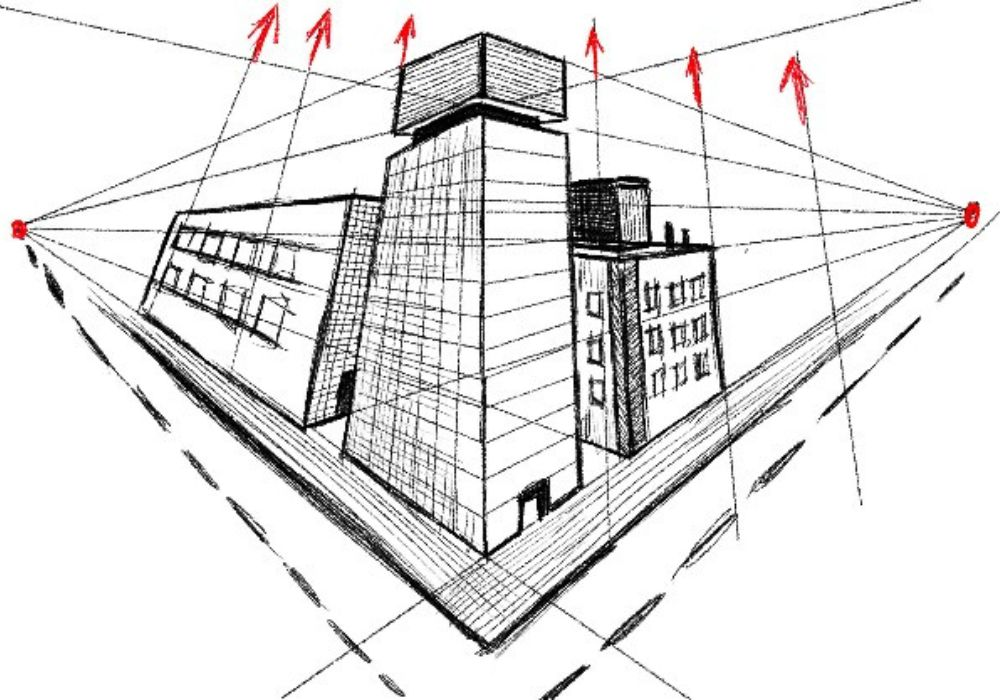

Tipografia

A tipografia , ou a arte de projetar e organizar tipos e fontes, é uma disciplina fundamental no currículo de um curso de Design. Essa disciplina é uma exploração meticulosa do poder das letras, palavras e textos como elementos de design, desempenhando um papel crucial na comunicação visual e na construção de identidades visuais.
O objetivo principal da disciplina de Tipografia em um curso de Design é capacitar os estudantes a compreender e aplicar princípios fundamentais de tipografia em seus projetos de design. Os alunos aprendem como a escolha da fonte, o espaçamento, o tamanho e a disposição das letras afetam a legibilidade, a estética e a comunicação visual como um todo.
Durante o curso, os estudantes exploram diversos aspectos da tipografia, incluindo:
História da Tipografia: estudo das origens e desenvolvimento da tipografia, desde a prensa de tipos móveis de Gutenberg até os designs contemporâneos.
Anatomia das Fontes: análise detalhada da estrutura de uma fonte, incluindo termos como ascendentes, descendentes, hastes e pernas.
Hierarquia Tipográfica: A criação de hierarquias visuais em documentos, para direcionar a atenção do leitor de maneira eficaz.
Combinação de Fontes: A seleção e combinação de diferentes fontes para criar designs equilibrados e coesos.
Desenho Técnico
O Desenho Técnico é uma disciplina essencial nos cursos de Design, pois desempenha um papel fundamental na formação de designers competentes e na comunicação visual de projetos. Essa disciplina é a linguagem universal do design, permitindo que os alunos comuniquem suas ideias de maneira precisa e eficaz.
A principal missão do curso de Desenho Técnico é equipar os estudantes com as habilidades necessárias para representar objetos, produtos e espaços de maneira detalhada e clara. Isso envolve o aprendizado de técnicas de desenho, notações, simbologia e convenções específicas, que são essenciais para a criação de desenhos técnicos precisos.
Durante o curso, os alunos exploram diversos aspectos do Desenho Técnico, incluindo:
Geometria Descritiva: estudo das projeções ortogonais, que permite a representação precisa de objetos tridimensionais em planos bidimensionais.
Normas e Convenções: entendimento e a aplicação das normas e convenções de desenho utilizadas na indústria, garantindo a compreensão universal dos desenhos.
Representação de Produto: A criação de desenhos detalhados de produtos, móveis, arquitetura e outras criações de design.
Projetos de Engenharia: capacidade de trabalhar com projetos de engenharia, interpretando e criando desenhos técnicos complexos.